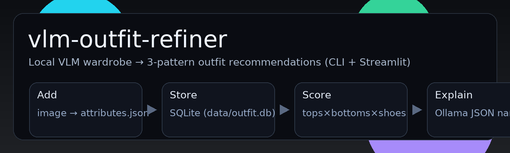
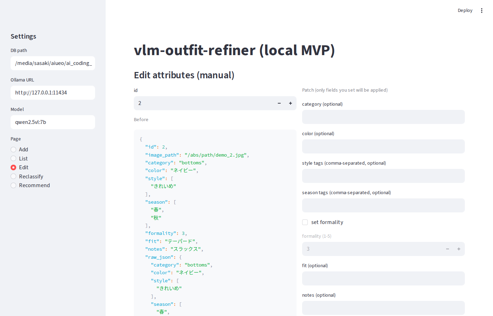
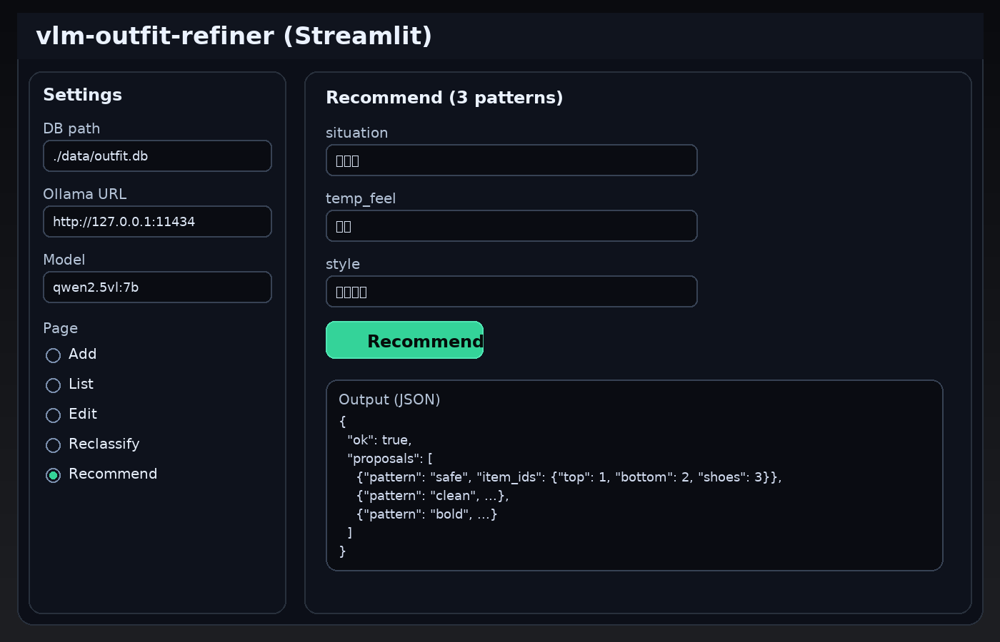
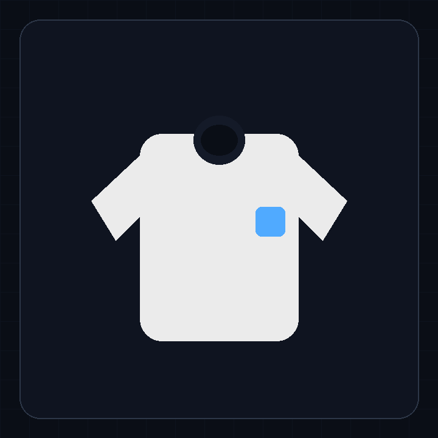
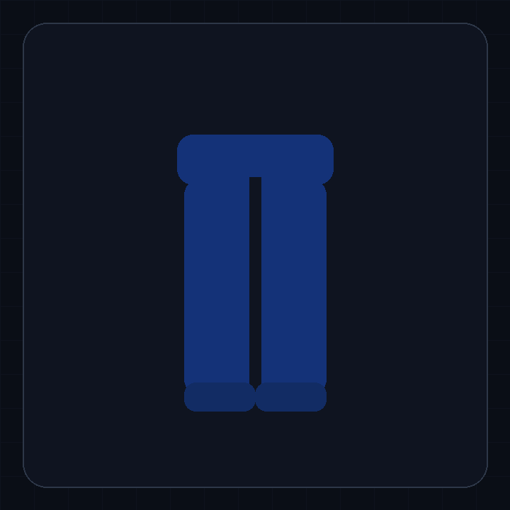
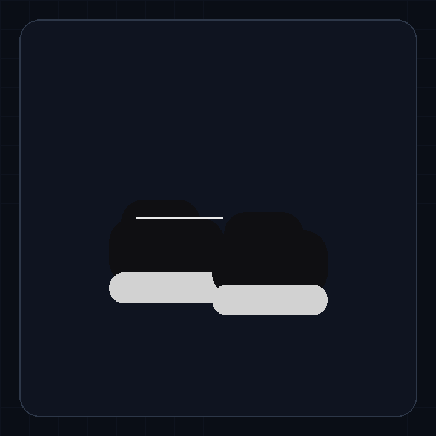
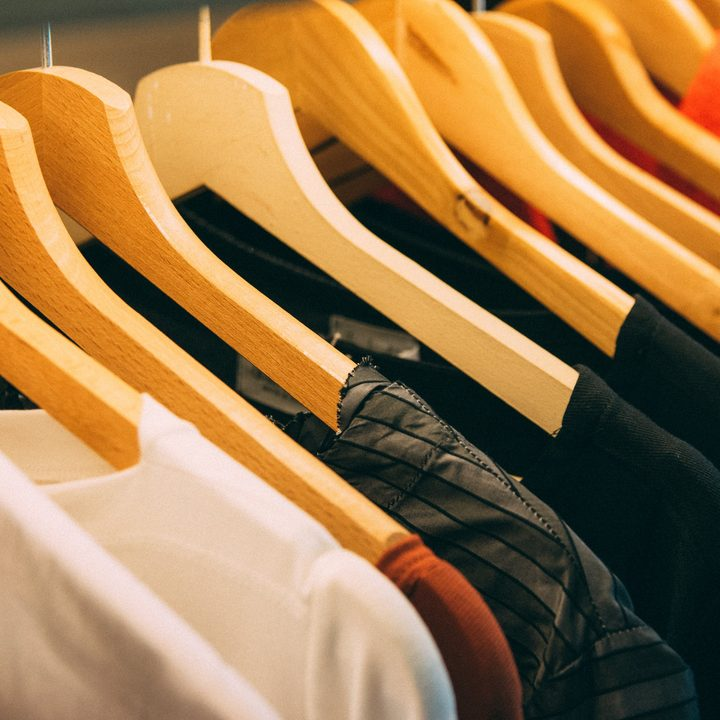
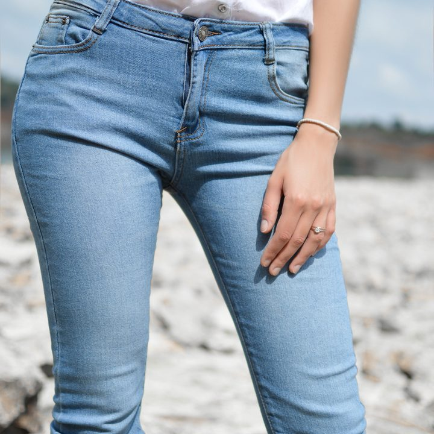
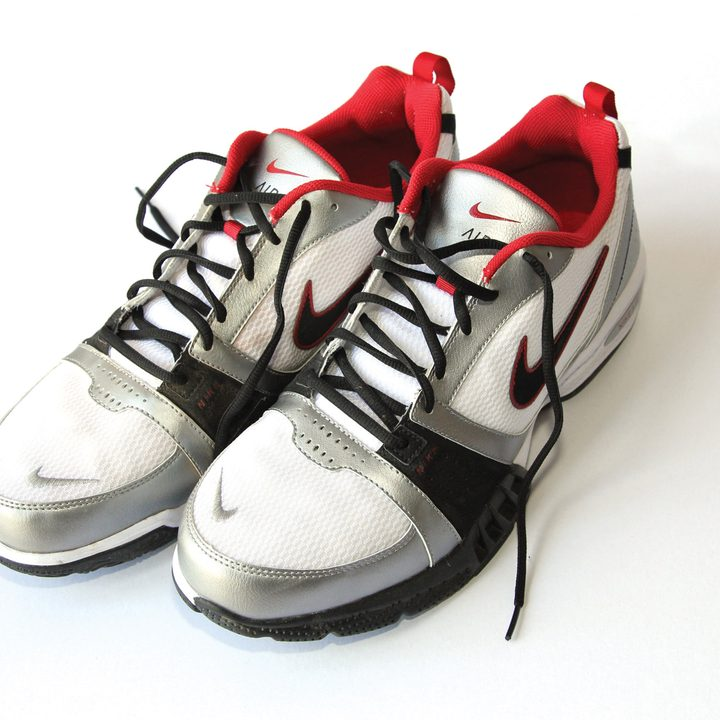

服が増えても「何を合わせるか」で迷う。写真を登録しておけば、 シーン×気温感×雰囲気から 無難 / きれいめ / 攻めの3パターンを理由つきで返します。 しかも ローカル完結（外部クラウド API なし）。

「何着る？」を考える時間を減らし、候補を3つに絞って即決できる。
外部クラウド API を使わず、Ollama + SQLite で完結。写真を外に出したくない人向け。
モデルの誤分類があっても、ワンクリックで取り直し or 手修正して運用できる。








いいえ。外部クラウド API は使いません。Ollama はローカルで動かし、DB はローカルの SQLite です。
まず reclassify で取り直し。それでも変なら edit で人間が直して運用できます。
tops / bottoms / shoes がそれぞれ1枚以上あると提案できます。
いいえ。CLIだけでも動きます。UIは streamlit run app.py で起動できます。
Vision対応のモデルならOK。例として qwen2.5vl:7b を使っています。
カフェでカジュアルな雰囲気を演出するためのシンプルなコーディネート。
・カフェのカジュアルな雰囲気を表現するために、シンプルな白いトップスと動きやすいブルーのパンツを組み合わせました。…
カフェでの清潔感と品格を出すためのカジュアルなきれいめなコーディネート。
・ホワイトのトップスとシルバーの靴の組み合わせで、清潔感と品格を表現しました。…
カフェで軽やかに動きながら個性を表現するカジュアルなコーディネート。
・カフェの雰囲気を楽しむための軽やかな動きを楽しめる素材を使用しています。…
{
"ok": true,
"situation": "カフェ",
"temp_feel": "普通",
"user_style": "カジュアル",
"model": "qwen2.5vl:7b",
"proposals": [
{
"pattern_label": "safe",
"pattern_ja": "無難",
"item_ids": { "top": 1, "bottom": 2, "shoes": 3 },
"summary": "カフェでカジュアルな雰囲気を演出するためのシンプルなコーディネート。",
"reason": "・カフェのカジュアルな雰囲気を表現するために、シンプルな白いトップスと動きやすいブルーのパンツを組み合わせました。…",
"tips": "靴の色をアクセントにすることで、より洗練された印象に仕上げることができます。"
},
{ "pattern_label": "clean", "pattern_ja": "きれいめ", "item_ids": { "top": 1, "bottom": 2, "shoes": 3 }, "summary": "カフェでの清潔感と品格を出すためのカジュアルなきれいめなコーディネート。", "reason": "・ホワイトのトップスとシルバーの靴の組み合わせで、清潔感と品格を表現しました。…", "tips": "靴の色をアクセントにすることで、より洗練された印象に仕上げることができます。" },
{ "pattern_label": "bold", "pattern_ja": "攻め", "item_ids": { "top": 1, "bottom": 2, "shoes": 3 }, "summary": "カフェで軽やかに動きながら個性を表現するカジュアルなコーディネート。", "reason": "・カフェの雰囲気を楽しむための軽やかな動きを楽しめる素材を使用しています。…", "tips": "足元はシルバーの靴で、トレンド感をプラスしましょう。" }
]
}